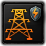

Building模组制作
原页面：Building modding
A building is a structure built using Civilian factories in states or provinces.
建筑
Buildings are defined within /Hearts of Iron IV/common/buildings/*.txt. Each building entry lies within the buildings = { ... } block, serving as its own block with arguments within defining the building, as this:
buildings = {
my_building = {
<...>
}
}
花费
Each building has a set price in industrial capacity required.
This cost is defined with:
base_cost = <int>- Required base cost of building.per_level_extra_cost = <int>- Optional additional cost per building in state/province.per_controlled_building_extra_cost = <int>- Optional additional cost per building controlled by country.
base_cost is the primary cost to build the building, added to each building level, per_level_extra_cost gets added for each building level in state or province in an arithmetic progression. With the example of 1000 base_cost and 100 per_level_extra_cost, the first level will cost 1000 IC to build, while the 5th level will cost 1400 IC, as 4 levels have been built before that. per_controlled_building_extra_cost adds additional cost per building controlled by country.
By default, each civilian factory provides 4 IC per day[1], which can be taken into account when calculating the cost. For comparison, by default a civilian factory costs 10800 IC, while infrastructure costs 6000 IC.
Additionally, infrastructure_construction_effect = yes, if included, will make the building get the building speed boost from any infrastructure built in the state. Maximum infrastructure level increase buidling speed by factor of 1[2]. Dividing that value by level_cap of infrastructure (5) gives a +20% boost per infastructure level.
Slots
In general, buildings fall into 3 categories by used building slots:
- Shared, which use the same, by default, 25 shared slots[3] for each state, such as civilian and military factories.
- Non-shared, defined for states, but using slots that are unique for each building in particular, such as infrastructure or air bases.
- Provincial, which get built for each province, using slots that are unique for each building in particular, such as forts or naval bases.
The 3 categories have separate zones in the country construction view where they are located.
Slot for building is defined inside level_cap block. Which possible parameters are:
shares_slots = <bool>- Wheter building should use shared slots for state.state_max = <int>- Maximum level in a state.province_max = <int>- Maximum level in a province. Defines building as provincial.group_by = <string>- Group of buildings, limiting all building with the same category to the same maximum used slots.exclusive_with = <building_id>- Prohibits the construction of certain buildings in the same state/province.
By default building is defined as state building. If state_max is unspecified, it gets assumed to be 15[4] by default.
Additional maximum level limit for provincial buldings for each terrain type can be set within /Hearts of Iron IV/common/terrain/*.txt files.
buildings_max_level = {
bunker = <int>
coastal_bunker = <int>
}
By default, all levels of the building are unlocked by default. However, if there are 科技 that enable construction of this building to a specified level, it becomes impossible to build without obtaining at least one of these technologies. It is to be noted that the add_building_construction effect or the starting state buildings can still be used to bypass the technological limit, while still not being possible to bypass the max level total.
修正项
Bulding can provide modifiers to country or/and state:
country_modifiers = { modifiers = { ... } }- Accept only country modifiers.state_modifiers = { ... }- Accept only state modifiers.
Country modifiers can be restricted to specific countries by enable_for_controllers = { ... } list of tags block inside country_modifiers. Modifiers will apply only if the controller of province/state is in the list, or if the list is empty.
Adding show_modifier = yes will make the modifiers show up in the tooltip of the building.
示例：
building = {
country_modifiers = {
enable_for_controllers { GER ENG }
modifiers = {
political_power_factor = 2.0
}
}
state_modifiers = {
local_building_slots_factor = 2
}
}
Additional arguments
Common arguments applicable to every building:
dlc_allowed = { ... }- Limit building to specific dlc. Uses has_dlc trigger.special_icon = <int>- Used to display icons for specific buildings starting from the left side of the terrain interface within the state interface.(See provinces with facilities for details.)value = 3- Decides the base health of a building for air bombing campaigns, which gets multiplied for each level of the building. Additionally, this also determines the price of the state to get during peace conferences or the cost in 政治点数 to occupy.
政治点数 to occupy.damage_factor = 0.3- Modifies the damage that this building gets from air bombing or land combat. Positive values increase it, while negatives decrease it. At 0, building can't be damaged.allied_build = <bool>- If set to yes, makes the building buildable by your faction members on your land.only_costal = yes(sic) - If specified, will make the building only be possible to build in either provinces that are defined as coastal or states that contain any such provinces, depending on the type of the building.disabled_in_dmz = <bool>- If added, will make the building impossible to build or use in states that are demilitarised zones.need_supply = <bool>- Whether building needs supply for operation.hide_if_missing_tech = <bool>- Hides building in the construction tab if the required technology has not been researched.missing_tech_loc = { ... }- Custom localized tooltip when the required technology has not been researched.need_detection = <bool>- ?detecting_intel_type = <intel_type>- Define what type of intelligence affects this building.Types of intelligence available:民用,陆军,airforce,海军only_display_if_exists = <bool>- The details of the building will only appear in the terrain interface of the province when it is constructed in a province of that state.(Usually used in conjunction with the special_icon parameter mentioned above.)At the same time, the terrain interface maps of other provinces in the state will not show the icon of this building. If set to 'no', all provinces in the entire state will display the icon and detailed information of the building, but provinces without the building will show a level of 0, even though this building can only be constructed once within the same state.specialization = { ... }- Associate the types of special projects.Defined in this path:/Hearts of Iron IV/common/special_projects/specialization/specializations.txttags = { ... }- Building tags, used to target buildings in raids and in damage_building effect.is_buildable = <bool>- Whether building can be build manually. Default to yes.province_damage_modifiers = { ... }- Modifiers to add to province if building is damaged/destroyed. [Need confirmation]state_damage_modifier = { ... }- Modifiers to add to state if building is damaged/destroyed. [Need confirmation]affects_energy = yes/no- Determine whether the building will affect energy consumption.[Need confirmation]
图标
The building icon is defined as icon_frame = 10. The integer shows which frame within the GFX_buildings_strip sprite gets used for this building.
By default, GFX_buildings_strip is defined within /Hearts of Iron IV/interface/countrystateview.gfx, however, it can be overwritten in any /Hearts of Iron IV/interface/*.gfx which is positioned later by filename order:
spriteType = {
name = "GFX_buildings_strip"
textureFile = "gfx/interface/buildings/building_icon_strip.dds"
noOfFrames = 16 # As of 1.11
}
The noOfFrames decides in how many frames the specified sprite is divided into, dividing the image horizontally into chunks of approximately equal width. If planning to add a new building icon rather than using a base game one, the building icon strip will need to be updated both in the noOfFrames and in the .dds file. By default, each building has a 46x46 resolution in pixels.
Within the building construction menu, buildings are divided into 3 zones depending on their used building slots category. In order to change where they are to adjust for new or missing buildings, the elements within the possible_constructions container in /Hearts of Iron IV/interface/countryconstructionsview.gui can have their positions changed.
Models
- 主条目：Entity模组制作
There are several arguments related to models within buildings.
show_on_map = 3 decides how many building models should there be per state or per province (depending on the building type) defined for the building. Each building construction will add one more model. If unspecified, will have no map models.
show_on_map_meshes = 2 decides how many entities are used for each building model. By default assumed to be 1.
always_shown = yes, if specified, will make the building model appear regardless whether it's covered by the fog of war or not.
has_destroyed_mesh = yes, if specified, will make the game use a separate model if the building has been destroyed by air bombing or occupation.
centered = yes, if specified, will mak
In order to assign an entity to a building, it must have a name of building_<building name>, like building_my_building, within the /Hearts of Iron IV/gfx/entities/*.asset file. If a building is set to use several entities, then the number will get appended in the end like building_my_building_1, starting with 1. If there's a destroyed mesh, then it'll append _destroyed in the end as building_my_building_destroyed
The locations of building models for each state are defined in /Hearts of Iron IV/map/buildings.txt. An entry in that file is defined as such (If unspecified, assume a number with up to 2 decimal digits):
State ID (integer); building ID (string); X position; Y position; Z position; Rotation; Adjacent sea province (integer)
- State ID defines which state the building is located in. Even for provincial buildings, this is the ID of the state, not the province. Instead, provincial buildings have several entries per state, with the XYZ position being used by the game to know which province it's for.
- Building ID is defines which model is being located. While this includes each building, this also includes floating harbours as floating_harbor.
- X, Y, and Z position represent the position on the map of the building model using the 3-dimensional Cartesian coordinate system. The X and Z positions are equivalent to the X and Y axes on the province bitmap with 1 pixel equalling 1 unit, left-to-right and down-to-up respectively. This is also what the game uses to know which province it's for for provincial buildings. The Y position, on the scale of 0 to 25.5, can be calculated with the heightmap by taking the colour value of the pixel at that position and making it fit on the scale of 0 to 25.5 (Such as by dividing it by 10 if it's on the scale of 0 to 255).
- Rotation is measured in radians. A rotation of 0 will result in the building model pointing in the same direction as the model is set, while positives will rotate it counter-clockwise and negatives will rotate it clockwise. A full rotation resulting in the same position as 0 is equal to the number π multiplied by 2, roughly 6.28.
- Adjacent sea province is only necessary to define for naval bases and floating harbours, in order to let the game know from which sea province ships or convoys can access the land province where it is located. If the building type is not a naval base, it should be left at 0.
It is preferable to generate the building models in the building section in the nudger, rather than filling it out manually. However, note that the game will crash if the currently-existing /Hearts of Iron IV/map/buildings.txt file is entirely empty, so there should be at least one definition, even if incorrect.
效果
Each building can accept any state-scoped modifier within itself, applying that to the state when built. Some used in base game include local_resources_<resource>, air_defence (for anti-air) and air_defence. In case of provincial buildings, province-level modifiers are accepted instead. This can also be used with modifier tokens to create a custom effect as a variable system.
Aside from state-scoped modifiers, there are several other arguments to make the building have the same effect as a base game building or be considered one for the AI:
| 名称 | 效果 | 示例 | 类型 | 备注 |
|---|---|---|---|---|
| military_production | Adds the specified amount of military factories to the controller. | military_production = 0.5 |
固定值型。 | A value that's larger than 1 will be the same as 1 factory, but it can fall between 0 and 1. |
| general_production | Adds the specified amount of civilian factories to the controller. | general_production = 0.5 |
固定值型。 | A value that's larger than 1 will be the same as 1 factory, but it can fall between 0 and 1. |
| naval_production | Adds the specified amount of dockyards to the controller. | naval_production = 0.5 |
固定值型。 | A value that's larger than 1 will be the same as 1 factory, but it can fall between 0 and 1. |
| 基础设施 | Makes the building be marked as infrastructure. | infrastructure = yes |
Boolean. | Includes the construction speed bonus and extra resources. |
| air_base | Makes the building be marked as an air base. | air_base = yes |
Boolean. | |
| supply_node | Makes the building be marked as a supply node. | supply_node = yes |
Boolean. | |
| is_port | Makes the building be marked as a naval port. | is_port = yes |
Boolean. | |
| land_fort | Adds that many land forts to the province. | land_fort = 1 |
固定值型。 | |
| naval_fort | Adds that many coastal forts to the province. | naval_fort = 1 |
固定值型。 | |
| refinery | Makes the building be marked as a synthetic refinery. | refinery = yes |
Boolean. | |
| fuel_silo | Makes the building be marked as a fuel silo. | fuel_silo = yes |
Boolean. | |
| radar | Makes the building be marked as a radar station. | radar = yes |
Boolean. | |
| rocket_production | Defines how much progress on rocket production is done daily. | rocket_production = 5 |
固定值型。 | |
| rocket_launch_capacity | Defines how many rockets the build can launch daily. | rocket_launch_capacity = 5 |
固定值型。 | |
| nuclear_reactor | Makes the building be marked as a nuclear reactor. | nuclear_reactor = yes |
Boolean. | |
| gun_emplacement | gun_emplacement = yes |
Boolean. |
示例
buildings = {
my_provincial_building = {
base_cost = 10000
infrastructure_construction_effect = yes
value = 1
icon_frame = 17
show_on_map = 1
always_shown = yes
spawn_point = my_provincial_building_spawn
country_modifiers = {
modifiers = {
army_attack_factor = 0.01
army_defence_factor = 0.01
}
}
level_cap = {
province_max = 3
}
}
my_shared_building = {
base_cost = 1000
per_level_extra_cost = 200
infrastructure_construction_effect = yes
value = 15
only_costal = yes
icon_frame = 18
show_on_map = 3
show_on_map_meshes = 3
has_destroyed_mesh = yes
military_production = 1
general_production = 1
naval_production = 1
level_cap = {
shares_slots = yes
# Max level of 15 since undefined
}
}
my_non_shared_building = {
base_cost = 1000
per_level_extra_cost = 2000
max_level = 2
value = 5
icon_frame = 19 # No model is defined
state_modifiers = {
recruitable_population_factor = 0.5
}
level_cap = {
state_max = 2
}
}
}
Spawn point
Coordinates for each building on map by default are defined using building name. Spawn point can be defined to to use 1 position for diffrent types of buildings.
Parameters:
type- Can be州or省份.max = <int>- How many spawn points state/province should have.only_costal = <bool>- Limit spawn point to coastal states/provinces.disable_auto_nudging = <bool>- Disable automatic positioning with nudging tool.
示例：
spawn_points = {
my_building_type_spawn = {
type = state
max = 1
}
my_province_building_type_spawn = {
type = province
max = 1
only_costal = yes
}
}
Now multiple buildings can use spawn_point = my_building_type_spawn.
Localization
Buildings use the following localization keys, using my_building as an example:
my_building: "My building"
my_building_desc: "My building's description"
my_building_plural: "My buildings"
modifier_production_speed_my_building_factor: "§Y$my_building$§! 建造 速度"
modifier_production_speed_my_building_factor_desc: "Modifies the 速度 of §Y$my_building$§! construction."
modifier_state_production_my_building_factor: "§Y$my_building$§! 建造 速度"
modifier_state_production_my_building_factor_desc: "Modifies the 速度 of §Y$my_building$§! 建造 in this state."
The first 3 are used for the building itself in various UI elements, while the last 4 are used to localise the modifiers automatically created for each building: production_speed_<building>_factor和state_production_speed_<building>_factor.
类型
These are the different types of buildings in the game (Can also be found inside /Hearts of Iron IV/common/buildings/00_buildings.txt):
| 图标 | 本地化名称 | 内部名称 | Maximum level | 类型 |
|---|---|---|---|---|
| 基础设施 | 基础设施 | 5 | Non-shared | |
| 军用工厂 | arms_factory | 20 | Shared | |
| 民用工厂 | industrial_complex | 20 | Shared | |
| 空军基地 | air_base | 10 | Non-shared | |
| 补给中心 | supply_node | 1 | Provincial | |
| 铁路 | rail_way | 5[5] | Provincial | |
| 海军工程设施 | naval_facility | 1 | Provincial | |
| 海军基地 | naval_base | 10 | Provincial | |
| 陆上堡垒 | bunker | 10 | Provincial | |
| 海岸堡垒 | coastal_bunker | 10 | Provincial | |
| 要塞网络 | stronghold_network | 1 | Shared | |
| 海军船坞 | 船坞 | 20 | Shared | |
| 防空 | anti_air_building | 5 | Non-shared | |
| 合成炼油厂 | synthetic_refinery | 3 | Shared | |
| 燃料仓 | fuel_silo | 15 | Shared | |
| 雷达站 | radar_station | 6 | Non-shared | |
| 多装药大口径火炮(*) | mega_gun_emplacement | 1 | Shared | |
| 火箭基地(*) | rocket_site | 3 | Shared | |
| Naval supply hub (*) | naval_supply_hub | 1 | Provincial | |
| Naval headquarters (*) | naval_headquarters | 1 | Provincial | |
| 核反应堆 | nuclear_reactor | 1 | Shared | |
| 重水核反应堆 | nuclear_reactor_heavy_water | 1 | Shared | |
| 民用核反应堆 | commercial_nuclear_reactor | 1 | Shared | |
| 核研究设施 | nuclear_facility | 1 | Provincial | |
| 空气动力学与航空电子设施 | air_facility | 1 | Provincial | |
| 陆战设施 | land_facility | 1 | Provincial | |
| 水坝 | dam | 1 | Provincial | |
| 水坝 | dam_mountain | 1 | Provincial | |
| Kiel Canal Locks | canal_kiel | 1 | Provincial | |
| Panama Canal Locks | canal_panama | 1 | Provincial | |
 |
Reinforced electrical grid(*) | energy_infrastructure | 1 | Shared |
| High capacity electrical grid(*) | industrial_infrastructure | 1 | Shared |
Note that while railways and supply nodes are buildings, not all traditional building operations apply to them. Their starting level is defined outside of state history和a separate effect must be used to construct railways mid-game, with the default add_building_construction or other building-related effects crashing the game.
参考资料
| 文档 | 效果 • 触发器 • 定义文件 • 修正项 • 修正项列表 • 作用域 • 本地化文件 • 事件钩子 • 数据结构（标记、事件目标、国家标签别名、变量、数组） |
| 脚本 | 成就 • AI • AI 焦点 • 自治领 • 力量均势 • 书签/剧本 (游戏规则) • 建筑 • 角色与特质 • 外观标签 • 国家 • 师 • 决议 • 学说 • 装备 • 事件 • 阵营 • 理念 • 意识形态 • 军事工业组织 • 国策 • 资源 • 脚本化 GUI • 科技与学说 • 单位 |
| 地图 | 地图 • 州 • 补给区域 • 战略区域 |
| 图形 | 界面 • 图形资源 • 实体 • 后期特效 • 粒子 • 字体 |
| 外观 | 肖像 • 名称列表 • 音乐 • 音效 |
| 其他 | 控制台指令 • 疑难排查 • 模组结构 • 模组 • 地图编辑器 |